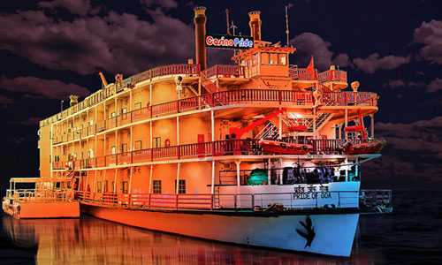

Wel come to Goa

Calangute BeachSituated 15 km from Panjim, Calangute Beach is the longest beach in North Goa, Weather : 26 - 31°C Label : Top Attraction Tags : Beach Best Time to Visit : After monsoon to enjoy the water sports Facilities : Changing Rooms are available at a cost of INR 25 per person |

Cruise in GoaCruise in Goa allows one to explore the exotic scenery, pristine waters Weather : 26 - 31°C Label : Top Things To Do Tags : Boating & Cruises Time Required : 1-5 hours Entry Fee : Varies according to the cruise type and package chosen |

Dudhsagar FallsOne of India's tallest waterfalls, the Dudhsagar Falls is located inside the Mollem Weather : 26 - 31°C Label : Instagram Worthy Tags : Waterfall Time Required : 6 - 7 Hours to Trek Entry Fee : Entry Fee: Nominal Charge INR 50 |

Fort AguadaFort Aguada is a 17th-century Portuguese fort looking out at the confluence of Weather : 26 - 31°C Label : Great For Family Outing Tags : Forts & Palaces Timings : 9:30 AM - 6:00 PM Entry Fee : Free |